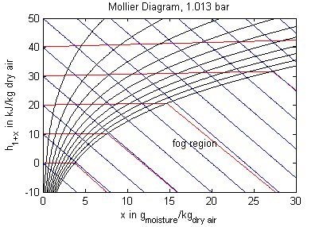

This package provides a full thermodynamic model of moist air including the fog region and temperatures below zero degC. The governing assumptions in this model are:
All extensive properties are expressed in terms of the total mass in order to comply with other media in this libary. However, for moist air it is rather common to express the absolute humidity in terms of mass of dry air only, which has advantages when working with charts. In addition, care must be taken, when working with mass fractions with respect to total mass, that all properties refer to the same water content when being used in mathematical operations (which is always the case if based on dry air only). Therefore two absolute humidities are computed in the BaseProperties model: X denotes the absolute humidity in terms of the total mass while x denotes the absolute humitity per unit mass of dry air. In addition, the relative humidity phi is also computed.
At the triple point temperature of water of 0.01°C or 273.16 K and a relative humidity greater than 1 fog may be present as liquid and as ice resulting in a specific enthalpy somewhere between those of the two isotherms for solid and liquid fog, respectively. For numerical reasons a coexisting mixture of 50% solid and 50% liquid fog is assumed in the fog region at the triple point in this model.
From the assumptions mentioned above it follows that the pressure should be in the region around atmospheric conditions or below (a few bars may still be fine though). Additionally a very high water content at low temperatures would yield incorrect densities, because the volume of the liquid or solid phase would not be negligible anymore. The model does not provide information on limits for water drop size in the fog region or transport information for the actual condensation or evaporation process in combination with surfaces. All excess water which is not in its vapour state is assumed to be still present in the air regarding its energy but not in terms of its spatial extent.
The thermodynamic model may be used for temperatures ranging from 240 - 400 K. This holds for all functions unless otherwise stated in their description. However, although the model works at temperatures above the saturation temperature it is questionable to use the term "relative humidity" in this region. Please note, that although several functions compute pure water properties, they are designed to be used within the moist air medium model where properties are dominated by air and steam in their vapor states, and not for pure liquid water applications.
Several additional functions that are not needed to describe the thermodynamic system, but are required to model transport processes, like heat and mass transfer, may be called. They usually neglect the moisture influence unless otherwise stated.
The model's main area of application is all processes that involve moist air cooling under near atmospheric pressure with possible moisture condensation. This is the case in all domestic and industrial air conditioning applications. Another large domain of moist air applications covers all processes that deal with dehydration of bulk material using air as a transport medium. Engineering tasks involving moist air are often performed (or at least visualized) by using charts that contain all relevant thermodynamic data for a moist air system. These so called psychrometric charts can be generated from the medium properties in this package. The model PsychrometricData may be used for this purpose in order to obtain data for figures like those below (the plotting itself is not part of the model though).

Legend: blue - constant specific enthalpy, red - constant temperature, black - constant relative humidity
Extends from Interfaces.PartialCondensingGases (Base class for mixtures of condensing and non-condensing gases).
| Name | Description |
|---|---|
| Water=1 | Index of water (in substanceNames, massFractions X, etc.) |
| Air=2 | Index of air (in substanceNames, massFractions X, etc.) |
| k_mair=steam.MM/dryair.MM | ratio of molar weights |
| dryair=IdealGases.Common.SingleGasesData.Air | |
| steam=IdealGases.Common.SingleGasesData.H2O | |
| MMX={steam.MM,dryair.MM} | Molar masses of components |
| ThermodynamicState record for moist air | |
| Moist air base properties record | |
| Return thermodynamic state as function of pressure p, temperature T and composition X | |
| Return thermodynamic state as function of pressure p, specific enthalpy h and composition X | |
| Return thermodynamic state as function of density d, temperature T and composition X | |
| Return thermodynamic state so that it smoothly approximates: if x > 0 then state_a else state_b | |
| Return absolute humitity per unit mass of moist air at saturation as a function of the thermodynamic state record | |
| Return absolute humitity per unit mass of dry air at saturation as a function of the thermodynamic state record | |
| Return absolute humitity per unit mass of dry air at saturation as a function of pressure p and temperature T | |
| Return steam mass fraction as a function of relative humidity phi and temperature T | |
| Return relative humidity as a function of pressure p, temperature T and composition X | |
| Return relative humidity as a function of the thermodynamic state record | |
| Return ideal gas constant as a function from thermodynamic state, only valid for phi<1 | |
| Return ideal gas constant as a function from composition X | |
| Return saturation pressure of water as a function of temperature T in the range of 273.16 to 373.16 K | |
| Time derivative of saturationPressureLiquid | |
| Return sublimation pressure of water as a function of temperature T between 223.16 and 273.16 K | |
| Derivative function for 'sublimationPressureIce' | |
| Return saturation pressure of water as a function of temperature T between 223.16 and 373.16 K | |
| Derivative function for 'saturationPressure' | |
| Return saturation temperature of water as a function of (partial) pressure p | |
| Return enthalpy of vaporization of water as a function of temperature T, 0 - 130 degC | |
| Return specific heat capacity of water (liquid only) as a function of temperature T | |
| Return enthalpy of liquid water as a function of temperature T(use enthalpyOfWater instead) | |
| Return specific enthalpy of gas (air and steam) as a function of temperature T and composition X | |
| Return specific enthalpy of steam as a function of temperature T | |
| Return specific enthalpy of dry air as a function of temperature T | |
| Computes specific enthalpy of water (solid/liquid) near atmospheric pressure from temperature T | |
| Derivative function of enthalpyOfWater | |
| Returns pressure of ideal gas as a function of the thermodynamic state record | |
| Return temperature of ideal gas as a function of the thermodynamic state record | |
| Return temperature as a function of pressure p, specific enthalpy h and composition X | |
| Returns density of ideal gas as a function of the thermodynamic state record | |
| Return specific enthalpy of moist air as a function of the thermodynamic state record | |
| Return specific enthalpy of moist air as a function of pressure p, temperature T and composition X | |
| Derivative function of h_pTX | |
| Return isentropic exponent (only for gas fraction!) | |
| Approximate calculation of h_is from upstream properties, downstream pressure, gas part only | |
| Return specific internal energy of moist air as a function of the thermodynamic state record | |
| Return specific internal energy of moist air as a function of pressure p, temperature T and composition X | |
| Derivative function for specificInternalEnergy_pTX | |
| Return specific entropy from thermodynamic state record, only valid for phi<1 | |
| Return specific Gibbs energy as a function of the thermodynamic state record, only valid for phi<1 | |
| Return specific Helmholtz energy as a function of the thermodynamic state record, only valid for phi<1 | |
| Return specific heat capacity at constant pressure as a function of the thermodynamic state record | |
| Return specific heat capacity at constant volume as a function of the thermodynamic state record | |
| Return dynamic viscosity as a function of the thermodynamic state record, valid from 73.15 K to 373.15 K | |
| Return thermal conductivity as a function of the thermodynamic state record, valid from 73.15 K to 373.15 K | |
| utility functions | |
| Produces plot data for psychrometric charts | |
| Inherited | |
| extended fluid constants | |
| fluidConstants | constant data for the fluid |
| Return mass fractions X from mole fractions | |
| Return mole fractions from mass fractions X | |
| ThermoStates | Enumeration type for independent variables |
| mediumName="unusablePartialMedium" | Name of the medium |
| substanceNames={mediumName} | Names of the mixture substances. Set substanceNames={mediumName} if only one substance. |
| extraPropertiesNames=fill("", 0) | Names of the additional (extra) transported properties. Set extraPropertiesNames=fill("",0) if unused |
| singleState | = true, if u and d are not a function of pressure |
| reducedX=true | = true if medium contains the equation sum(X) = 1.0; set reducedX=true if only one substance (see docu for details) |
| fixedX=false | = true if medium contains the equation X = reference_X |
| reference_p=101325 | Reference pressure of Medium: default 1 atmosphere |
| reference_T=298.15 | Reference temperature of Medium: default 25 deg Celsius |
| reference_X=fill(1/nX, nX) | Default mass fractions of medium |
| p_default=101325 | Default value for pressure of medium (for initialization) |
| T_default=Modelica.SIunits.Conversions.from_degC(20) | Default value for temperature of medium (for initialization) |
| h_default=specificEnthalpy_pTX(p_default, T_default, X_default) | Default value for specific enthalpy of medium (for initialization) |
| X_default=reference_X | Default value for mass fractions of medium (for initialization) |
| nS=size(substanceNames, 1) | Number of substances |
| nX=nS | Number of mass fractions |
| nXi=if fixedX then 0 else if reducedX then nS - 1 else nS | Number of structurally independent mass fractions (see docu for details) |
| nC=size(extraPropertiesNames, 1) | Number of extra (outside of standard mass-balance) transported properties |
| Return thermodynamic state as function of p, s and composition X or Xi | |
| Return the Prandtl number | |
| alias for deprecated name | |
| alias for deprecated name | |
| Return isentropic enthalpy | |
| Return velocity of sound | |
| Return overall the isobaric expansion coefficient beta | |
| alias for isobaricExpansionCoefficient for user convenience | |
| Return overall the isothermal compressibility factor | |
| alias of isothermalCompressibility for user convenience | |
| Return density derivative wrt pressure at const specific enthalpy | |
| Return density derivative wrt specific enthalpy at constant pressure | |
| Return density derivative wrt pressure at const temperature | |
| Return density derivative wrt temperature at constant pressure | |
| Return density derivative wrt mass fraction | |
| Return the molar mass of the medium | |
| Return specific enthalpy from p, T, and X or Xi | |
| Return density from p, T, and X or Xi | |
| Return temperature from p, h, and X or Xi | |
| Return density from p, h, and X or Xi | |
| Return temperature from p,s, and X or Xi | |
| Return density from p, s, and X or Xi | |
| Return specific enthalpy from p, s, and X or Xi | |
| AbsolutePressure | Type for absolute pressure with medium specific attributes |
| Density | Type for density with medium specific attributes |
| DynamicViscosity | Type for dynamic viscosity with medium specific attributes |
| EnthalpyFlowRate | Type for enthalpy flow rate with medium specific attributes |
| MassFlowRate | Type for mass flow rate with medium specific attributes |
| MassFraction | Type for mass fraction with medium specific attributes |
| MoleFraction | Type for mole fraction with medium specific attributes |
| MolarMass | Type for molar mass with medium specific attributes |
| MolarVolume | Type for molar volume with medium specific attributes |
| IsentropicExponent | Type for isentropic exponent with medium specific attributes |
| SpecificEnergy | Type for specific energy with medium specific attributes |
| SpecificInternalEnergy | Type for specific internal energy with medium specific attributes |
| SpecificEnthalpy | Type for specific enthalpy with medium specific attributes |
| SpecificEntropy | Type for specific entropy with medium specific attributes |
| SpecificHeatCapacity | Type for specific heat capacity with medium specific attributes |
| SurfaceTension | Type for surface tension with medium specific attributes |
| Temperature | Type for temperature with medium specific attributes |
| ThermalConductivity | Type for thermal conductivity with medium specific attributes |
| PrandtlNumber | Type for Prandtl number with medium specific attributes |
| VelocityOfSound | Type for velocity of sound with medium specific attributes |
| ExtraProperty | Type for unspecified, mass-specific property transported by flow |
| CumulativeExtraProperty | Type for conserved integral of unspecified, mass specific property |
| ExtraPropertyFlowRate | Type for flow rate of unspecified, mass-specific property |
| IsobaricExpansionCoefficient | Type for isobaric expansion coefficient with medium specific attributes |
| DipoleMoment | Type for dipole moment with medium specific attributes |
| DerDensityByPressure | Type for partial derivative of density with resect to pressure with medium specific attributes |
| DerDensityByEnthalpy | Type for partial derivative of density with resect to enthalpy with medium specific attributes |
| DerEnthalpyByPressure | Type for partial derivative of enthalpy with resect to pressure with medium specific attributes |
| DerDensityByTemperature | Type for partial derivative of density with resect to temperature with medium specific attributes |
| Types, constants to define menu choices | |
constant Integer Water=1 "Index of water (in substanceNames, massFractions X, etc.)";
constant Integer Air=2 "Index of air (in substanceNames, massFractions X, etc.)";
constant Real k_mair = steam.MM/dryair.MM "ratio of molar weights";
constant IdealGases.Common.DataRecord dryair = IdealGases.Common.SingleGasesData.Air;
constant IdealGases.Common.DataRecord steam = IdealGases.Common.SingleGasesData.H2O;
constant SI.MolarMass[2] MMX = {steam.MM,dryair.MM}
"Molar masses of components";
 Modelica.Media.Air.MoistAir.ThermodynamicState
Modelica.Media.Air.MoistAir.ThermodynamicState
redeclare record extends ThermodynamicState "ThermodynamicState record for moist air" end ThermodynamicState;
 Modelica.Media.Air.MoistAir.BaseProperties
Modelica.Media.Air.MoistAir.BaseProperties
| Type | Name | Default | Description |
|---|---|---|---|
| Advanced | |||
| Boolean | preferredMediumStates | false | = true if StateSelect.prefer shall be used for the independent property variables of the medium |
redeclare replaceable model extends BaseProperties(
T(stateSelect=if preferredMediumStates then StateSelect.prefer else StateSelect.default),
p(stateSelect=if preferredMediumStates then StateSelect.prefer else StateSelect.default),
Xi(stateSelect=if preferredMediumStates then StateSelect.prefer else StateSelect.default),
redeclare final constant Boolean standardOrderComponents=true)
"Moist air base properties record"
/* p, T, X = X[Water] are used as preferred states, since only then all
other quantities can be computed in a recursive sequence.
If other variables are selected as states, static state selection
is no longer possible and non-linear algebraic equations occur.
*/
MassFraction x_water "Mass of total water/mass of dry air";
Real phi "Relative humidity";
protected
MassFraction X_liquid "Mass fraction of liquid or solid water";
MassFraction X_steam "Mass fraction of steam water";
MassFraction X_air "Mass fraction of air";
MassFraction X_sat
"Steam water mass fraction of saturation boundary in kg_water/kg_moistair";
MassFraction x_sat
"Steam water mass content of saturation boundary in kg_water/kg_dryair";
AbsolutePressure p_steam_sat "Partial saturation pressure of steam";
equation
assert(T >= 200.0 and T <= 423.15, "
Temperature T is not in the allowed range
200.0 K <= (T ="
+ String(T) + " K) <= 423.15 K
required from medium model \"" + mediumName + "\".");
MM = 1/(Xi[Water]/MMX[Water]+(1.0-Xi[Water])/MMX[Air]);
p_steam_sat = min(saturationPressure(T),0.999*p);
X_sat = min(p_steam_sat * k_mair/max(100*Constants.eps, p - p_steam_sat)*(1 - Xi[Water]), 1.0)
"Water content at saturation with respect to actual water content";
X_liquid = max(Xi[Water] - X_sat, 0.0);
X_steam = Xi[Water]-X_liquid;
X_air = 1-Xi[Water];
h = specificEnthalpy_pTX(p,T,Xi);
R = dryair.R*(X_air/(1 - X_liquid)) + steam.R*X_steam/(1 - X_liquid);
//
u = h - R*T;
d = p/(R*T);
/* Note, u and d are computed under the assumption that the volume of the liquid
water is neglible with respect to the volume of air and of steam
*/
state.p = p;
state.T = T;
state.X = X;
// these x are per unit mass of DRY air!
x_sat = k_mair*p_steam_sat/max(100*Constants.eps,p - p_steam_sat);
x_water = Xi[Water]/max(X_air,100*Constants.eps);
phi = p/p_steam_sat*Xi[Water]/(Xi[Water] + k_mair*X_air);
end BaseProperties;
 Modelica.Media.Air.MoistAir.setState_pTX
Modelica.Media.Air.MoistAir.setState_pTX
| Type | Name | Default | Description |
|---|---|---|---|
| AbsolutePressure | p | Pressure [Pa] | |
| Temperature | T | Temperature [K] | |
| MassFraction | X[:] | reference_X | Mass fractions [kg/kg] |
| Type | Name | Description |
|---|---|---|
| ThermodynamicState | state | Thermodynamic state |
redeclare function setState_pTX
"Return thermodynamic state as function of pressure p, temperature T and composition X"
extends Modelica.Icons.Function;
input AbsolutePressure p "Pressure";
input Temperature T "Temperature";
input MassFraction X[:]=reference_X "Mass fractions";
output ThermodynamicState state "Thermodynamic state";
algorithm
state := if size(X,1) == nX then ThermodynamicState(p=p,T=T, X=X) else
ThermodynamicState(p=p,T=T, X=cat(1,X,{1-sum(X)}));
end setState_pTX;
Modelica.Media.Air.MoistAir.setState_phX
| Type | Name | Default | Description |
|---|---|---|---|
| AbsolutePressure | p | Pressure [Pa] | |
| SpecificEnthalpy | h | Specific enthalpy [J/kg] | |
| MassFraction | X[:] | reference_X | Mass fractions [kg/kg] |
| Type | Name | Description |
|---|---|---|
| ThermodynamicState | state | Thermodynamic state |
redeclare function setState_phX
"Return thermodynamic state as function of pressure p, specific enthalpy h and composition X"
extends Modelica.Icons.Function;
input AbsolutePressure p "Pressure";
input SpecificEnthalpy h "Specific enthalpy";
input MassFraction X[:]=reference_X "Mass fractions";
output ThermodynamicState state "Thermodynamic state";
algorithm
state := if size(X,1) == nX then ThermodynamicState(p=p,T=T_phX(p,h,X),X=X) else
ThermodynamicState(p=p,T=T_phX(p,h,X), X=cat(1,X,{1-sum(X)}));
end setState_phX;
Modelica.Media.Air.MoistAir.setState_dTX
| Type | Name | Default | Description |
|---|---|---|---|
| Density | d | density [kg/m3] | |
| Temperature | T | Temperature [K] | |
| MassFraction | X[:] | reference_X | Mass fractions [kg/kg] |
| Type | Name | Description |
|---|---|---|
| ThermodynamicState | state | Thermodynamic state |
redeclare function setState_dTX
"Return thermodynamic state as function of density d, temperature T and composition X"
extends Modelica.Icons.Function;
input Density d "density";
input Temperature T "Temperature";
input MassFraction X[:]=reference_X "Mass fractions";
output ThermodynamicState state "Thermodynamic state";
algorithm
state := if size(X,1) == nX then ThermodynamicState(p=d*({steam.R,dryair.R}*X)*T,T=T,X=X) else
ThermodynamicState(p=d*({steam.R,dryair.R}*cat(1,X,{1-sum(X)}))*T,T=T, X=cat(1,X,{1-sum(X)}));
end setState_dTX;
Modelica.Media.Air.MoistAir.setSmoothState
| Type | Name | Default | Description |
|---|---|---|---|
| Real | x | m_flow or dp | |
| ThermodynamicState | state_a | Thermodynamic state if x > 0 | |
| ThermodynamicState | state_b | Thermodynamic state if x < 0 | |
| Real | x_small | Smooth transition in the region -x_small < x < x_small |
| Type | Name | Description |
|---|---|---|
| ThermodynamicState | state | Smooth thermodynamic state for all x (continuous and differentiable) |
redeclare function extends setSmoothState
"Return thermodynamic state so that it smoothly approximates: if x > 0 then state_a else state_b"
algorithm
state := ThermodynamicState(p=Media.Common.smoothStep(x, state_a.p, state_b.p, x_small),
T=Media.Common.smoothStep(x, state_a.T, state_b.T, x_small),
X=Media.Common.smoothStep(x, state_a.X, state_b.X, x_small));
end setSmoothState;
| Type | Name | Default | Description |
|---|---|---|---|
| ThermodynamicState | state | Thermodynamic state record |
| Type | Name | Description |
|---|---|---|
| MassFraction | X_sat | Steam mass fraction of sat. boundary [kg/kg] |
function Xsaturation "Return absolute humitity per unit mass of moist air at saturation as a function of the thermodynamic state record" input ThermodynamicState state "Thermodynamic state record"; output MassFraction X_sat "Steam mass fraction of sat. boundary"; algorithm X_sat := k_mair/(state.p/min(saturationPressure(state.T),0.999*state.p) - 1 + k_mair); end Xsaturation;
| Type | Name | Default | Description |
|---|---|---|---|
| ThermodynamicState | state | Thermodynamic state record |
| Type | Name | Description |
|---|---|---|
| MassFraction | x_sat | Absolute humidity per unit mass of dry air [kg/kg] |
function xsaturation "Return absolute humitity per unit mass of dry air at saturation as a function of the thermodynamic state record" input ThermodynamicState state "Thermodynamic state record"; output MassFraction x_sat "Absolute humidity per unit mass of dry air"; algorithm x_sat:=k_mair*saturationPressure(state.T)/max(100*Constants.eps,state.p - saturationPressure(state.T)); end xsaturation;
| Type | Name | Default | Description |
|---|---|---|---|
| AbsolutePressure | p | Pressure [Pa] | |
| Temperature | T | Temperature [K] |
| Type | Name | Description |
|---|---|---|
| MassFraction | x_sat | Absolute humidity per unit mass of dry air [kg/kg] |
function xsaturation_pT "Return absolute humitity per unit mass of dry air at saturation as a function of pressure p and temperature T" input AbsolutePressure p "Pressure"; input SI.Temperature T "Temperature"; output MassFraction x_sat "Absolute humidity per unit mass of dry air"; algorithm x_sat:=k_mair*saturationPressure(T)/max(100*Constants.eps,p - saturationPressure(T)); end xsaturation_pT;
| Type | Name | Default | Description |
|---|---|---|---|
| AbsolutePressure | p | Pressure [Pa] | |
| Temperature | T | Temperature [K] | |
| Real | phi | Relative humidity (0 ... 1.0) |
| Type | Name | Description |
|---|---|---|
| MassFraction | X_steam | Absolute humidity, steam mass fraction [kg/kg] |
function massFraction_pTphi "Return steam mass fraction as a function of relative humidity phi and temperature T" input AbsolutePressure p "Pressure"; input Temperature T "Temperature"; input Real phi "Relative humidity (0 ... 1.0)"; output MassFraction X_steam "Absolute humidity, steam mass fraction"; protected constant Real k = 0.621964713077499 "Ratio of molar masses"; AbsolutePressure psat = saturationPressure(T) "Saturation pressure"; algorithm X_steam := phi*k/(k*phi+p/psat-phi); end massFraction_pTphi;
| Type | Name | Default | Description |
|---|---|---|---|
| Pressure | p | Pressure [Pa] | |
| Temperature | T | Temperature [K] | |
| MassFraction | X[:] | Composition [1] |
| Type | Name | Description |
|---|---|---|
| Real | phi | Relative humidity |
function relativeHumidity_pTX "Return relative humidity as a function of pressure p, temperature T and composition X" input SI.Pressure p "Pressure"; input SI.Temperature T "Temperature"; input SI.MassFraction[:] X "Composition"; output Real phi "Relative humidity"; protected SI.Pressure p_steam_sat "Saturation pressure"; SI.MassFraction X_air "Dry air mass fraction"; algorithm p_steam_sat :=min(saturationPressure(T), 0.999*p); X_air :=1 - X[Water]; phi :=max(0.0,min(1.0, p/p_steam_sat*X[Water]/(X[Water] + k_mair*X_air))); end relativeHumidity_pTX;
| Type | Name | Default | Description |
|---|---|---|---|
| ThermodynamicState | state | Thermodynamic state |
| Type | Name | Description |
|---|---|---|
| Real | phi | Relative humidity |
function relativeHumidity "Return relative humidity as a function of the thermodynamic state record" input ThermodynamicState state "Thermodynamic state"; output Real phi "Relative humidity"; algorithm phi:=relativeHumidity_pTX(state.p, state.T, state.X); end relativeHumidity;
 Modelica.Media.Air.MoistAir.gasConstant
Modelica.Media.Air.MoistAir.gasConstant
| Type | Name | Default | Description |
|---|---|---|---|
| ThermodynamicState | state | thermodynamic state |
| Type | Name | Description |
|---|---|---|
| SpecificHeatCapacity | R | mixture gas constant [J/(kg.K)] |
redeclare function extends gasConstant "Return ideal gas constant as a function from thermodynamic state, only valid for phi<1" algorithm R := dryair.R*(1-state.X[Water]) + steam.R*state.X[Water]; end gasConstant;
| Type | Name | Default | Description |
|---|---|---|---|
| MassFraction | X[:] | Gas phase composition [1] |
| Type | Name | Description |
|---|---|---|
| SpecificHeatCapacity | R | Ideal gas constant [J/(kg.K)] |
function gasConstant_X "Return ideal gas constant as a function from composition X" input SI.MassFraction X[:] "Gas phase composition"; output SI.SpecificHeatCapacity R "Ideal gas constant"; algorithm R := dryair.R*(1-X[Water]) + steam.R*X[Water]; end gasConstant_X;
 Modelica.Media.Air.MoistAir.saturationPressureLiquid
Modelica.Media.Air.MoistAir.saturationPressureLiquid
| Type | Name | Default | Description |
|---|---|---|---|
| Temperature | Tsat | saturation temperature [K] |
| Type | Name | Description |
|---|---|---|
| AbsolutePressure | psat | saturation pressure [Pa] |
function saturationPressureLiquid "Return saturation pressure of water as a function of temperature T in the range of 273.16 to 373.16 K" annotation(derivative=saturationPressureLiquid_der); extends Modelica.Icons.Function; input SI.Temperature Tsat "saturation temperature"; output SI.AbsolutePressure psat "saturation pressure"; algorithm psat := 611.657*Math.exp(17.2799 - 4102.99/(Tsat - 35.719)); end saturationPressureLiquid;
Modelica.Media.Air.MoistAir.saturationPressureLiquid_der
| Type | Name | Default | Description |
|---|---|---|---|
| Temperature | Tsat | Saturation temperature [K] | |
| Real | dTsat | Saturation temperature derivative [K/s] |
| Type | Name | Description |
|---|---|---|
| Real | psat_der | Saturation pressure [Pa/s] |
function saturationPressureLiquid_der "Time derivative of saturationPressureLiquid" extends Modelica.Icons.Function; input SI.Temperature Tsat "Saturation temperature"; input Real dTsat(unit="K/s") "Saturation temperature derivative"; output Real psat_der(unit="Pa/s") "Saturation pressure"; algorithm /*psat := 611.657*Math.exp(17.2799 - 4102.99/(Tsat - 35.719));*/ psat_der:=611.657*Math.exp(17.2799 - 4102.99/(Tsat - 35.719))*4102.99*dTsat/(Tsat - 35.719)/(Tsat - 35.719); end saturationPressureLiquid_der;
Modelica.Media.Air.MoistAir.sublimationPressureIce
| Type | Name | Default | Description |
|---|---|---|---|
| Temperature | Tsat | sublimation temperature [K] |
| Type | Name | Description |
|---|---|---|
| AbsolutePressure | psat | sublimation pressure [Pa] |
function sublimationPressureIce "Return sublimation pressure of water as a function of temperature T between 223.16 and 273.16 K" annotation(derivative=sublimationPressureIce_der); extends Modelica.Icons.Function; input SI.Temperature Tsat "sublimation temperature"; output SI.AbsolutePressure psat "sublimation pressure"; algorithm psat := 611.657*Math.exp(22.5159*(1.0 - 273.16/Tsat)); end sublimationPressureIce;
Modelica.Media.Air.MoistAir.sublimationPressureIce_der
| Type | Name | Default | Description |
|---|---|---|---|
| Temperature | Tsat | Sublimation temperature [K] | |
| Real | dTsat | Time derivative of sublimation temperature [K/s] |
| Type | Name | Description |
|---|---|---|
| Real | psat_der | Sublimation pressure [Pa/s] |
function sublimationPressureIce_der "Derivative function for 'sublimationPressureIce'" extends Modelica.Icons.Function; input SI.Temperature Tsat "Sublimation temperature"; input Real dTsat(unit="K/s") "Time derivative of sublimation temperature"; output Real psat_der(unit="Pa/s") "Sublimation pressure"; algorithm /*psat := 611.657*Math.exp(22.5159*(1.0 - 273.16/Tsat));*/ psat_der:=611.657*Math.exp(22.5159*(1.0 - 273.16/Tsat))*22.5159*273.16*dTsat/Tsat/Tsat; end sublimationPressureIce_der;
Modelica.Media.Air.MoistAir.saturationPressure
| Type | Name | Default | Description |
|---|---|---|---|
| Temperature | Tsat | saturation temperature [K] |
| Type | Name | Description |
|---|---|---|
| AbsolutePressure | psat | saturation pressure [Pa] |
redeclare function extends saturationPressure "Return saturation pressure of water as a function of temperature T between 223.16 and 373.16 K" annotation(derivative=saturationPressure_der); algorithm psat := Utilities.spliceFunction(saturationPressureLiquid(Tsat),sublimationPressureIce(Tsat),Tsat-273.16,1.0); end saturationPressure;
| Type | Name | Default | Description |
|---|---|---|---|
| Temperature | Tsat | Saturation temperature [K] | |
| Real | dTsat | Time derivative of saturation temperature [K/s] |
| Type | Name | Description |
|---|---|---|
| Real | psat_der | Saturation pressure [Pa/s] |
function saturationPressure_der
"Derivative function for 'saturationPressure'"
input Temperature Tsat "Saturation temperature";
input Real dTsat(unit="K/s") "Time derivative of saturation temperature";
output Real psat_der(unit="Pa/s") "Saturation pressure";
algorithm
/*psat := Utilities.spliceFunction(saturationPressureLiquid(Tsat),sublimationPressureIce(Tsat),Tsat-273.16,1.0);*/
psat_der := Utilities.spliceFunction_der(
saturationPressureLiquid(Tsat),
sublimationPressureIce(Tsat),
Tsat - 273.16,
1.0,
saturationPressureLiquid_der(Tsat=Tsat, dTsat=dTsat),
sublimationPressureIce_der(Tsat=Tsat, dTsat=dTsat),
dTsat,
0);
end saturationPressure_der;
| Type | Name | Default | Description |
|---|---|---|---|
| Pressure | p | Pressure [Pa] | |
| Temperature | T_min | 200 | Lower boundary of solution [K] |
| Temperature | T_max | 400 | Upper boundary of solution [K] |
| Type | Name | Description |
|---|---|---|
| Temperature | T | Saturation temperature [K] |
function saturationTemperature
"Return saturation temperature of water as a function of (partial) pressure p"
input SI.Pressure p "Pressure";
input SI.Temperature T_min=200 "Lower boundary of solution";
input SI.Temperature T_max=400 "Upper boundary of solution";
output SI.Temperature T "Saturation temperature";
protected
package Internal
extends Modelica.Media.Common.OneNonLinearEquation;
redeclare record extends f_nonlinear_Data
// Define data to be passed to user function
end f_nonlinear_Data;
redeclare function extends f_nonlinear
algorithm
y:=saturationPressure(x);
// Compute the non-linear equation: y = f(x, Data)
end f_nonlinear;
// Dummy definition
redeclare function extends solve
end solve;
end Internal;
algorithm
T:=Internal.solve(p, T_min, T_max);
end saturationTemperature;
 Modelica.Media.Air.MoistAir.enthalpyOfVaporization
Modelica.Media.Air.MoistAir.enthalpyOfVaporization
| Type | Name | Default | Description |
|---|---|---|---|
| Temperature | T | temperature [K] |
| Type | Name | Description |
|---|---|---|
| SpecificEnthalpy | r0 | vaporization enthalpy [J/kg] |
redeclare function extends enthalpyOfVaporization
"Return enthalpy of vaporization of water as a function of temperature T, 0 - 130 degC"
algorithm
/*r0 := 1e3*(2501.0145 - (T - 273.15)*(2.3853 + (T - 273.15)*(0.002969 - (T
- 273.15)*(7.5293e-5 + (T - 273.15)*4.6084e-7))));*/
//katrin: replaced by linear correlation, simpler and more accurate in the entire region
//source VDI-Waermeatlas, linear inter- and extrapolation between values for 0.01°C and 40°C.
r0:=(2405900-2500500)/(40-0)*(T-273.16)+2500500;
end enthalpyOfVaporization;
Modelica.Media.Air.MoistAir.HeatCapacityOfWater
| Type | Name | Default | Description |
|---|---|---|---|
| Temperature | T | Temperature [K] |
| Type | Name | Description |
|---|---|---|
| SpecificHeatCapacity | cp_fl | Specific heat capacity of liquid [J/(kg.K)] |
function HeatCapacityOfWater
"Return specific heat capacity of water (liquid only) as a function of temperature T"
extends Modelica.Icons.Function;
input Temperature T "Temperature";
output SpecificHeatCapacity cp_fl "Specific heat capacity of liquid";
algorithm
cp_fl := 1e3*(4.2166 - (T - 273.15)*(0.0033166 + (T - 273.15)*(0.00010295
- (T - 273.15)*(1.3819e-6 + (T - 273.15)*7.3221e-9))));
end HeatCapacityOfWater;
Modelica.Media.Air.MoistAir.enthalpyOfLiquid
| Type | Name | Default | Description |
|---|---|---|---|
| Temperature | T | temperature [K] |
| Type | Name | Description |
|---|---|---|
| SpecificEnthalpy | h | liquid enthalpy [J/kg] |
redeclare function extends enthalpyOfLiquid
"Return enthalpy of liquid water as a function of temperature T(use enthalpyOfWater instead)"
algorithm
h := (T - 273.15)*1e3*(4.2166 - 0.5*(T - 273.15)*(0.0033166 + 0.333333*(T - 273.15)*(0.00010295
- 0.25*(T - 273.15)*(1.3819e-6 + 0.2*(T - 273.15)*7.3221e-9))));
end enthalpyOfLiquid;
Modelica.Media.Air.MoistAir.enthalpyOfGas
| Type | Name | Default | Description |
|---|---|---|---|
| Temperature | T | temperature [K] | |
| MassFraction | X[:] | vector of mass fractions [kg/kg] |
| Type | Name | Description |
|---|---|---|
| SpecificEnthalpy | h | specific enthalpy [J/kg] |
redeclare function extends enthalpyOfGas
"Return specific enthalpy of gas (air and steam) as a function of temperature T and composition X"
algorithm
h := SingleGasNasa.h_Tlow(data=steam, T=T, refChoice=3, h_off=46479.819+2501014.5)*X[Water]
+ SingleGasNasa.h_Tlow(data=dryair, T=T, refChoice=3, h_off=25104.684)*(1.0-X[Water]);
end enthalpyOfGas;
Modelica.Media.Air.MoistAir.enthalpyOfCondensingGas
| Type | Name | Default | Description |
|---|---|---|---|
| Temperature | T | temperature [K] |
| Type | Name | Description |
|---|---|---|
| SpecificEnthalpy | h | specific enthalpy [J/kg] |
redeclare function extends enthalpyOfCondensingGas "Return specific enthalpy of steam as a function of temperature T" algorithm h := SingleGasNasa.h_Tlow(data=steam, T=T, refChoice=3, h_off=46479.819+2501014.5); end enthalpyOfCondensingGas;
Modelica.Media.Air.MoistAir.enthalpyOfNonCondensingGas
| Type | Name | Default | Description |
|---|---|---|---|
| Temperature | T | temperature [K] |
| Type | Name | Description |
|---|---|---|
| SpecificEnthalpy | h | specific enthalpy [J/kg] |
redeclare function extends enthalpyOfNonCondensingGas "Return specific enthalpy of dry air as a function of temperature T" algorithm h := SingleGasNasa.h_Tlow(data=dryair, T=T, refChoice=3, h_off=25104.684); end enthalpyOfNonCondensingGas;
| Type | Name | Default | Description |
|---|---|---|---|
| Temperature | T | Temperature [K] |
| Type | Name | Description |
|---|---|---|
| SpecificEnthalpy | h | Specific enthalpy of water [J/kg] |
function enthalpyOfWater "Computes specific enthalpy of water (solid/liquid) near atmospheric pressure from temperature T" annotation(derivative=enthalpyOfWater_der); input SIunits.Temperature T "Temperature"; output SIunits.SpecificEnthalpy h "Specific enthalpy of water"; algorithm /*simple model assuming constant properties: heat capacity of liquid water:4200 J/kg heat capacity of solid water: 2050 J/kg enthalpy of fusion (liquid=>solid): 333000 J/kg*/ h:=Utilities.spliceFunction(4200*(T-273.15),2050*(T-273.15)-333000,T-273.16,0.1); end enthalpyOfWater;
| Type | Name | Default | Description |
|---|---|---|---|
| Temperature | T | Temperature [K] | |
| Real | dT | Time derivative of temperature [K/s] |
| Type | Name | Description |
|---|---|---|
| Real | dh | Time derivative of specific enthalpy [J/(kg.s)] |
function enthalpyOfWater_der "Derivative function of enthalpyOfWater" input SIunits.Temperature T "Temperature"; input Real dT(unit="K/s") "Time derivative of temperature"; output Real dh(unit="J/(kg.s)") "Time derivative of specific enthalpy"; algorithm /*simple model assuming constant properties: heat capacity of liquid water:4200 J/kg heat capacity of solid water: 2050 J/kg enthalpy of fusion (liquid=>solid): 333000 J/kg*/ //h:=Utilities.spliceFunction(4200*(T-273.15),2050*(T-273.15)-333000,T-273.16,0.1); dh:=Utilities.spliceFunction_der(4200*(T-273.15),2050*(T-273.15)-333000,T-273.16,0.1,4200*dT,2050*dT,dT,0); end enthalpyOfWater_der;
 Modelica.Media.Air.MoistAir.pressure
Modelica.Media.Air.MoistAir.pressure
| Type | Name | Default | Description |
|---|---|---|---|
| ThermodynamicState | state | thermodynamic state record |
| Type | Name | Description |
|---|---|---|
| AbsolutePressure | p | Pressure [Pa] |
redeclare function extends pressure "Returns pressure of ideal gas as a function of the thermodynamic state record" algorithm p := state.p; end pressure;
Modelica.Media.Air.MoistAir.temperature
| Type | Name | Default | Description |
|---|---|---|---|
| ThermodynamicState | state | thermodynamic state record |
| Type | Name | Description |
|---|---|---|
| Temperature | T | Temperature [K] |
redeclare function extends temperature "Return temperature of ideal gas as a function of the thermodynamic state record" algorithm T := state.T; end temperature;
| Type | Name | Default | Description |
|---|---|---|---|
| AbsolutePressure | p | Pressure [Pa] | |
| SpecificEnthalpy | h | Specific enthalpy [J/kg] | |
| MassFraction | X[:] | Mass fractions of composition [kg/kg] |
| Type | Name | Description |
|---|---|---|
| Temperature | T | Temperature [K] |
function T_phX
"Return temperature as a function of pressure p, specific enthalpy h and composition X"
input AbsolutePressure p "Pressure";
input SpecificEnthalpy h "Specific enthalpy";
input MassFraction[:] X "Mass fractions of composition";
output Temperature T "Temperature";
protected
package Internal
"Solve h(data,T) for T with given h (use only indirectly via temperature_phX)"
extends Modelica.Media.Common.OneNonLinearEquation;
redeclare record extends f_nonlinear_Data
"Data to be passed to non-linear function"
extends Modelica.Media.IdealGases.Common.DataRecord;
end f_nonlinear_Data;
redeclare function extends f_nonlinear
algorithm
y := h_pTX(p,x,X);
end f_nonlinear;
// Dummy definition has to be added for current Dymola
redeclare function extends solve
end solve;
end Internal;
algorithm
T := Internal.solve(h, 240, 400, p, X[1:nXi], steam);
end T_phX;
 Modelica.Media.Air.MoistAir.density
Modelica.Media.Air.MoistAir.density
| Type | Name | Default | Description |
|---|---|---|---|
| ThermodynamicState | state | thermodynamic state record |
| Type | Name | Description |
|---|---|---|
| Density | d | Density [kg/m3] |
redeclare function extends density "Returns density of ideal gas as a function of the thermodynamic state record" algorithm d := state.p/(gasConstant(state)*state.T); end density;
Modelica.Media.Air.MoistAir.specificEnthalpy
| Type | Name | Default | Description |
|---|---|---|---|
| ThermodynamicState | state | thermodynamic state record |
| Type | Name | Description |
|---|---|---|
| SpecificEnthalpy | h | Specific enthalpy [J/kg] |
redeclare function extends specificEnthalpy "Return specific enthalpy of moist air as a function of the thermodynamic state record" algorithm h := h_pTX(state.p, state.T, state.X); end specificEnthalpy;
Modelica.Media.Air.MoistAir.h_pTX
| Type | Name | Default | Description |
|---|---|---|---|
| Pressure | p | Pressure [Pa] | |
| Temperature | T | Temperature [K] | |
| MassFraction | X[:] | Mass fractions of moist air [1] |
| Type | Name | Description |
|---|---|---|
| SpecificEnthalpy | h | Specific enthalpy at p, T, X [J/kg] |
function h_pTX
"Return specific enthalpy of moist air as a function of pressure p, temperature T and composition X"
annotation(derivative=h_pTX_der);
extends Modelica.Icons.Function;
input SI.Pressure p "Pressure";
input SI.Temperature T "Temperature";
input SI.MassFraction X[:] "Mass fractions of moist air";
output SI.SpecificEnthalpy h "Specific enthalpy at p, T, X";
protected
SI.AbsolutePressure p_steam_sat "Partial saturation pressure of steam";
SI.MassFraction X_sat "Absolute humidity per unit mass of moist air";
SI.MassFraction X_liquid "mass fraction of liquid water";
SI.MassFraction X_steam "mass fraction of steam water";
SI.MassFraction X_air "mass fraction of air";
algorithm
p_steam_sat :=saturationPressure(T);
//p_steam_sat :=min(saturationPressure(T), 0.999*p);
X_sat:=min(p_steam_sat*k_mair/max(100*Constants.eps, p - p_steam_sat)*(1 - X[
Water]), 1.0);
X_liquid :=max(X[Water] - X_sat, 0.0);
X_steam :=X[Water] - X_liquid;
X_air :=1 - X[Water];
/* h := {SingleGasNasa.h_Tlow(data=steam, T=T, refChoice=3, h_off=46479.819+2501014.5),
SingleGasNasa.h_Tlow(data=dryair, T=T, refChoice=3, h_off=25104.684)}*
{X_steam, X_air} + enthalpyOfLiquid(T)*X_liquid;*/
h := {SingleGasNasa.h_Tlow(data=steam, T=T, refChoice=3, h_off=46479.819+2501014.5),
SingleGasNasa.h_Tlow(data=dryair, T=T, refChoice=3, h_off=25104.684)}*
{X_steam, X_air} + enthalpyOfWater(T)*X_liquid;
end h_pTX;
Modelica.Media.Air.MoistAir.h_pTX_der
| Type | Name | Default | Description |
|---|---|---|---|
| Pressure | p | Pressure [Pa] | |
| Temperature | T | Temperature [K] | |
| MassFraction | X[:] | Mass fractions of moist air [1] | |
| Real | dp | Pressure derivative [Pa/s] | |
| Real | dT | Temperature derivative [K/s] | |
| Real | dX[:] | Composition derivative [1/s] |
| Type | Name | Description |
|---|---|---|
| Real | h_der | Time derivative of specific enthalpy [J/(kg.s)] |
function h_pTX_der "Derivative function of h_pTX"
extends Modelica.Icons.Function;
input SI.Pressure p "Pressure";
input SI.Temperature T "Temperature";
input SI.MassFraction X[:] "Mass fractions of moist air";
input Real dp(unit="Pa/s") "Pressure derivative";
input Real dT(unit="K/s") "Temperature derivative";
input Real dX[:](each unit="1/s") "Composition derivative";
output Real h_der(unit="J/(kg.s)") "Time derivative of specific enthalpy";
protected
SI.AbsolutePressure p_steam_sat "Partial saturation pressure of steam";
SI.MassFraction X_sat "Absolute humidity per unit mass of moist air";
SI.MassFraction X_liquid "Mass fraction of liquid water";
SI.MassFraction X_steam "Mass fraction of steam water";
SI.MassFraction X_air "Mass fraction of air";
SI.MassFraction x_sat
"Absolute humidity per unit mass of dry air at saturation";
Real dX_steam(unit="1/s") "Time deriveative of steam mass fraction";
Real dX_air(unit="1/s") "Time derivative of dry air mass fraction";
Real dX_liq(unit="1/s") "Time derivative of liquid/solid water mass fraction";
Real dps(unit="Pa/s") "Time derivative of saturation pressure";
Real dx_sat(unit="1/s")
"Time derivative of abolute humidity per unit mass of dry air";
algorithm
p_steam_sat :=saturationPressure(T);
x_sat:=p_steam_sat*k_mair/max(100*Modelica.Constants.eps, p - p_steam_sat);
X_sat:=min(x_sat*(1 - X[Water]), 1.0);
X_liquid :=Utilities.spliceFunction(X[Water] - X_sat, 0.0, X[Water] - X_sat,1e-6);
X_steam :=X[Water] - X_liquid;
X_air :=1 - X[Water];
dX_air:=-dX[Water];
dps:=saturationPressure_der(Tsat=T, dTsat=dT);
dx_sat:=k_mair*(dps*(p-p_steam_sat)-p_steam_sat*(dp-dps))/(p-p_steam_sat)/(p-p_steam_sat);
dX_liq:=Utilities.spliceFunction_der(X[Water] - X_sat, 0.0, X[Water] - X_sat,1e-6,(1+x_sat)*dX[Water]-(1-X[Water])*dx_sat,0.0,(1+x_sat)*dX[Water]-(1-X[Water])*dx_sat,0.0);
//dX_liq:=if X[Water]>=X_sat then (1+x_sat)*dX[Water]-(1-X[Water])*dx_sat else 0;
dX_steam:=dX[Water]-dX_liq;
h_der:= X_steam*Modelica.Media.IdealGases.Common.SingleGasNasa.h_Tlow_der(data=steam, T=T, refChoice=3, h_off=46479.819+2501014.5, dT=dT)+
dX_steam*Modelica.Media.IdealGases.Common.SingleGasNasa.h_Tlow(data=steam, T=T, refChoice=3, h_off=46479.819+2501014.5) +
X_air*Modelica.Media.IdealGases.Common.SingleGasNasa.h_Tlow_der(data=dryair, T=T, refChoice=3, h_off=25104.684, dT=dT) +
dX_air*Modelica.Media.IdealGases.Common.SingleGasNasa.h_Tlow(data=dryair, T=T, refChoice=3, h_off=25104.684) +
X_liquid*enthalpyOfWater_der(T=T, dT=dT) +
dX_liq*enthalpyOfWater(T);
end h_pTX_der;
Modelica.Media.Air.MoistAir.isentropicExponent
| Type | Name | Default | Description |
|---|---|---|---|
| ThermodynamicState | state | thermodynamic state record |
| Type | Name | Description |
|---|---|---|
| IsentropicExponent | gamma | Isentropic exponent [1] |
redeclare function extends isentropicExponent "Return isentropic exponent (only for gas fraction!)" algorithm gamma := specificHeatCapacityCp(state)/specificHeatCapacityCv(state); end isentropicExponent;
Modelica.Media.Air.MoistAir.isentropicEnthalpyApproximation
| Type | Name | Default | Description |
|---|---|---|---|
| AbsolutePressure | p2 | downstream pressure [Pa] | |
| ThermodynamicState | state | thermodynamic state at upstream location |
| Type | Name | Description |
|---|---|---|
| SpecificEnthalpy | h_is | isentropic enthalpy [J/kg] |
function isentropicEnthalpyApproximation
"Approximate calculation of h_is from upstream properties, downstream pressure, gas part only"
extends Modelica.Icons.Function;
input AbsolutePressure p2 "downstream pressure";
input ThermodynamicState state "thermodynamic state at upstream location";
output SpecificEnthalpy h_is "isentropic enthalpy";
protected
SpecificEnthalpy h "specific enthalpy at upstream location";
IsentropicExponent gamma = isentropicExponent(state) "Isentropic exponent";
protected
MassFraction[nX] X "complete X-vector";
algorithm
X := if reducedX then cat(1,state.X,{1-sum(state.X)}) else state.X;
h := {SingleGasNasa.h_Tlow(data=steam, T=state.T, refChoice=3, h_off=46479.819+2501014.5),
SingleGasNasa.h_Tlow(data=dryair, T=state.T, refChoice=3, h_off=25104.684)}*X;
h_is := h + gamma/(gamma - 1.0)*(state.T*gasConstant(state))*
((p2/state.p)^((gamma - 1)/gamma) - 1.0);
end isentropicEnthalpyApproximation;
Modelica.Media.Air.MoistAir.specificInternalEnergy
| Type | Name | Default | Description |
|---|---|---|---|
| ThermodynamicState | state | thermodynamic state record |
| Type | Name | Description |
|---|---|---|
| SpecificInternalEnergy | u | Specific internal energy [J/kg] |
redeclare function extends specificInternalEnergy "Return specific internal energy of moist air as a function of the thermodynamic state record" extends Modelica.Icons.Function; output SI.SpecificInternalEnergy u "Specific internal energy"; algorithm u := specificInternalEnergy_pTX(state.p,state.T,state.X); end specificInternalEnergy;
| Type | Name | Default | Description |
|---|---|---|---|
| Pressure | p | Pressure [Pa] | |
| Temperature | T | Temperature [K] | |
| MassFraction | X[:] | Mass fractions of moist air [1] |
| Type | Name | Description |
|---|---|---|
| SpecificInternalEnergy | u | Specific internal energy [J/kg] |
function specificInternalEnergy_pTX
"Return specific internal energy of moist air as a function of pressure p, temperature T and composition X"
annotation(derivative=specificInternalEnergy_pTX_der);
input SI.Pressure p "Pressure";
input SI.Temperature T "Temperature";
input SI.MassFraction X[:] "Mass fractions of moist air";
output SI.SpecificInternalEnergy u "Specific internal energy";
protected
SI.AbsolutePressure p_steam_sat "Partial saturation pressure of steam";
SI.MassFraction X_liquid "Mass fraction of liquid water";
SI.MassFraction X_steam "Mass fraction of steam water";
SI.MassFraction X_air "Mass fraction of air";
SI.MassFraction X_sat "Absolute humidity per unit mass of moist air";
Real R_gas "Ideal gas constant";
algorithm
p_steam_sat :=saturationPressure(T);
X_sat:=min(p_steam_sat*k_mair/max(100*Constants.eps, p - p_steam_sat)*(1 - X[
Water]), 1.0);
X_liquid :=max(X[Water] - X_sat, 0.0);
X_steam :=X[Water] - X_liquid;
X_air :=1 - X[Water];
R_gas:= dryair.R*X_air/(1-X_liquid)+steam.R* X_steam/(1-X_liquid);
u := X_steam*SingleGasNasa.h_Tlow(data=steam, T=T, refChoice=3, h_off=46479.819+2501014.5)+
X_air*SingleGasNasa.h_Tlow(data=dryair, T=T, refChoice=3, h_off=25104.684)
+ enthalpyOfWater(T)*X_liquid-R_gas*T;
end specificInternalEnergy_pTX;
| Type | Name | Default | Description |
|---|---|---|---|
| Pressure | p | Pressure [Pa] | |
| Temperature | T | Temperature [K] | |
| MassFraction | X[:] | Mass fractions of moist air [1] | |
| Real | dp | Pressure derivative [Pa/s] | |
| Real | dT | Temperature derivative [K/s] | |
| Real | dX[:] | Mass fraction derivatives [1/s] |
| Type | Name | Description |
|---|---|---|
| Real | u_der | Specific internal energy derivative [J/(kg.s)] |
function specificInternalEnergy_pTX_der
"Derivative function for specificInternalEnergy_pTX"
input SI.Pressure p "Pressure";
input SI.Temperature T "Temperature";
input SI.MassFraction X[:] "Mass fractions of moist air";
input Real dp(unit="Pa/s") "Pressure derivative";
input Real dT(unit="K/s") "Temperature derivative";
input Real dX[:](each unit="1/s") "Mass fraction derivatives";
output Real u_der(unit="J/(kg.s)") "Specific internal energy derivative";
protected
SI.AbsolutePressure p_steam_sat "Partial saturation pressure of steam";
SI.MassFraction X_liquid "Mass fraction of liquid water";
SI.MassFraction X_steam "Mass fraction of steam water";
SI.MassFraction X_air "Mass fraction of air";
SI.MassFraction X_sat "Absolute humidity per unit mass of moist air";
SI.SpecificHeatCapacity R_gas "Ideal gas constant";
SI.MassFraction x_sat
"Absolute humidity per unit mass of dry air at saturation";
Real dX_steam(unit="1/s") "Time deriveative of steam mass fraction";
Real dX_air(unit="1/s") "Time derivative of dry air mass fraction";
Real dX_liq(unit="1/s") "Time derivative of liquid/solid water mass fraction";
Real dps(unit="Pa/s") "Time derivative of saturation pressure";
Real dx_sat(unit="1/s")
"Time derivative of abolute humidity per unit mass of dry air";
Real dR_gas(unit="J/(kg.K.s)") "Time derivative of ideal gas constant";
algorithm
p_steam_sat :=saturationPressure(T);
x_sat:=p_steam_sat*k_mair/max(100*Modelica.Constants.eps, p - p_steam_sat);
X_sat:=min(x_sat*(1 - X[Water]), 1.0);
X_liquid :=Utilities.spliceFunction(X[Water] - X_sat, 0.0, X[Water] - X_sat,1e-6);
X_steam :=X[Water] - X_liquid;
X_air :=1 - X[Water];
R_gas:= steam.R*X_steam/(1-X_liquid)+dryair.R* X_air/(1-X_liquid);
dX_air:=-dX[Water];
dps:=saturationPressure_der(Tsat=T, dTsat=dT);
dx_sat:=k_mair*(dps*(p-p_steam_sat)-p_steam_sat*(dp-dps))/(p-p_steam_sat)/(p-p_steam_sat);
dX_liq:=Utilities.spliceFunction_der(X[Water] - X_sat, 0.0, X[Water] - X_sat,1e-6,(1+x_sat)*dX[Water]-(1-X[Water])*dx_sat,0.0,(1+x_sat)*dX[Water]-(1-X[Water])*dx_sat,0.0);
dX_steam:=dX[Water]-dX_liq;
dR_gas:=(steam.R*(dX_steam*(1-X_liquid)+dX_liq*X_steam)+dryair.R*(dX_air*(1-X_liquid)+dX_liq*X_air))/(1-X_liquid)/(1-X_liquid);
u_der:=X_steam*SingleGasNasa.h_Tlow_der(data=steam, T=T, refChoice=3, h_off=46479.819+2501014.5, dT=dT)+
dX_steam*SingleGasNasa.h_Tlow(data=steam, T=T, refChoice=3, h_off=46479.819+2501014.5) +
X_air*SingleGasNasa.h_Tlow_der(data=dryair, T=T, refChoice=3, h_off=25104.684, dT=dT) +
dX_air*SingleGasNasa.h_Tlow(data=dryair, T=T, refChoice=3, h_off=25104.684) +
X_liquid*enthalpyOfWater_der(T=T, dT=dT) +
dX_liq*enthalpyOfWater(T) - dR_gas*T-R_gas*dT;
equation
end specificInternalEnergy_pTX_der;
 Modelica.Media.Air.MoistAir.specificEntropy
Modelica.Media.Air.MoistAir.specificEntropy
| Type | Name | Default | Description |
|---|---|---|---|
| ThermodynamicState | state | thermodynamic state record |
| Type | Name | Description |
|---|---|---|
| SpecificEntropy | s | Specific entropy [J/(kg.K)] |
redeclare function extends specificEntropy
"Return specific entropy from thermodynamic state record, only valid for phi<1"
protected
MoleFraction[2] Y = massToMoleFractions(state.X,{steam.MM,dryair.MM})
"molar fraction";
algorithm
s:=SingleGasNasa.s0_Tlow(dryair, state.T)*(1-state.X[Water])
+ SingleGasNasa.s0_Tlow(steam, state.T)*state.X[Water]
- (state.X[Water]*Modelica.Constants.R/MMX[Water]*(if state.X[Water]<Modelica.Constants.eps then state.X[Water] else Modelica.Math.log(Y[Water]*state.p/reference_p))
+ (1-state.X[Water])*Modelica.Constants.R/MMX[Air]*(if (1-state.X[Water])<Modelica.Constants.eps then (1-state.X[Water]) else Modelica.Math.log(Y[Air]*state.p/reference_p)));
end specificEntropy;
Modelica.Media.Air.MoistAir.specificGibbsEnergy
| Type | Name | Default | Description |
|---|---|---|---|
| ThermodynamicState | state | thermodynamic state record |
| Type | Name | Description |
|---|---|---|
| SpecificEnergy | g | Specific Gibbs energy [J/kg] |
redeclare function extends specificGibbsEnergy "Return specific Gibbs energy as a function of the thermodynamic state record, only valid for phi<1" extends Modelica.Icons.Function; algorithm g := h_pTX(state.p,state.T,state.X) - state.T*specificEntropy(state); end specificGibbsEnergy;
Modelica.Media.Air.MoistAir.specificHelmholtzEnergy
| Type | Name | Default | Description |
|---|---|---|---|
| ThermodynamicState | state | thermodynamic state record |
| Type | Name | Description |
|---|---|---|
| SpecificEnergy | f | Specific Helmholtz energy [J/kg] |
redeclare function extends specificHelmholtzEnergy "Return specific Helmholtz energy as a function of the thermodynamic state record, only valid for phi<1" extends Modelica.Icons.Function; algorithm f := h_pTX(state.p,state.T,state.X) - gasConstant(state)*state.T - state.T*specificEntropy(state); end specificHelmholtzEnergy;
Modelica.Media.Air.MoistAir.specificHeatCapacityCp
| Type | Name | Default | Description |
|---|---|---|---|
| ThermodynamicState | state | thermodynamic state record |
| Type | Name | Description |
|---|---|---|
| SpecificHeatCapacity | cp | Specific heat capacity at constant pressure [J/(kg.K)] |
redeclare function extends specificHeatCapacityCp
"Return specific heat capacity at constant pressure as a function of the thermodynamic state record"
protected
Real dT(unit="s/K") = 1.0;
algorithm
cp := h_pTX_der(state.p,state.T,state.X, 0.0, 1.0, zeros(size(state.X,1)))*dT
"Definition of cp: dh/dT @ constant p";
// cp:= SingleGasNasa.cp_Tlow(dryair, state.T)*(1-state.X[Water])
// + SingleGasNasa.cp_Tlow(steam, state.T)*state.X[Water];
end specificHeatCapacityCp;
Modelica.Media.Air.MoistAir.specificHeatCapacityCv
| Type | Name | Default | Description |
|---|---|---|---|
| ThermodynamicState | state | thermodynamic state record |
| Type | Name | Description |
|---|---|---|
| SpecificHeatCapacity | cv | Specific heat capacity at constant volume [J/(kg.K)] |
redeclare function extends specificHeatCapacityCv
"Return specific heat capacity at constant volume as a function of the thermodynamic state record"
algorithm
cv:= SingleGasNasa.cp_Tlow(dryair, state.T)*(1-state.X[Water]) +
SingleGasNasa.cp_Tlow(steam, state.T)*state.X[Water]
- gasConstant(state);
end specificHeatCapacityCv;
Modelica.Media.Air.MoistAir.dynamicViscosity
| Type | Name | Default | Description |
|---|---|---|---|
| ThermodynamicState | state | thermodynamic state record |
| Type | Name | Description |
|---|---|---|
| DynamicViscosity | eta | Dynamic viscosity [Pa.s] |
redeclare function extends dynamicViscosity
"Return dynamic viscosity as a function of the thermodynamic state record, valid from 73.15 K to 373.15 K"
import Modelica.Media.Incompressible.TableBased.Polynomials_Temp;
algorithm
eta := Polynomials_Temp.evaluate({(-4.96717436974791E-011), 5.06626785714286E-008, 1.72937731092437E-005},
Cv.to_degC(state.T));
end dynamicViscosity;
Modelica.Media.Air.MoistAir.thermalConductivity
| Type | Name | Default | Description |
|---|---|---|---|
| ThermodynamicState | state | thermodynamic state record |
| Type | Name | Description |
|---|---|---|
| ThermalConductivity | lambda | Thermal conductivity [W/(m.K)] |
redeclare function extends thermalConductivity
"Return thermal conductivity as a function of the thermodynamic state record, valid from 73.15 K to 373.15 K"
import Modelica.Media.Incompressible.TableBased.Polynomials_Temp;
algorithm
lambda := Polynomials_Temp.evaluate({(-4.8737307422969E-008), 7.67803133753502E-005, 0.0241814385504202},
Cv.to_degC(state.T));
end thermalConductivity;
 Modelica.Media.Air.MoistAir.PsychrometricData
Modelica.Media.Air.MoistAir.PsychrometricData
This model produces psychrometric data from the moist air model in this library to be plotted in charts. The two most common chart varieties are the Mollier Diagram and the Psycrometric Chart. The first is widely used in some European countries while the second is more common in the Anglo-American world. Specific enthalpy is plotted over absolute humidity in the Mollier Diagram, it is the other way round in the Psychrometric Chart.
It must be noted that the relationship of both axis variables is not right-angled, the absolute humidity follows a slope which equals the enthalpy of vaporization at 0°C. For better reading and in oder to reduce the fog region the humidity axis is rotated to obtain a right-angled plot. Both charts usually contain additional information as isochores or auxiliary scales for e.g. heat ratios. Those information are omitted in this model and the charts below. Other important features of psychrometric chart data are that all mass specific variables (like absolute humidity, specific enthalpy etc.) are expressed in terms of kg dry air and that their baseline of 0 enthalpy is found at 0°C and zero humidity.
Legend: blue - constant specific enthalpy, red - constant temperature, black - constant relative humidity
The model provides data for lines of constant specific enthalpy, temperature and relative humidity in a Mollier Diagram or Psychrometric Chart as they were used for the figures above. For limitations and ranges of validity please refer to the MoistAir package description. Absolute humidity x is increased with time in this model. The specific enthalpies adjusted for plotting are then obtained from:
| Type | Name | Default | Description |
|---|---|---|---|
| Pressure | p_const | 1e5 | Pressure [Pa] |
| Integer | n_T | 11 | Number of isotherms |
| Temperature | T_min | 253.15 | Lowest isotherm [K] |
| Temperature | T_step | 10 | Temperature step between two isotherms [K] |
| Integer | n_h | 16 | Number of lines with constant specific enthalpy |
| SpecificEnthalpy | h_min | -20e3 | Lowest line of constant enthalpy [J/kg] |
| SpecificEnthalpy | h_step | 1e4 | Enthalpy step between two lines of constant enthalpy [J/kg] |
| Integer | n_phi | 10 | Number of lines with constant relative humidity |
| Real | phi_min | 0.1 | Lowest line of constant humidity |
| Real | phi_step | 0.1 | Step between two lines of constant humidity |
| MassFraction | x_min | 0.00 | Minimum diagram absolute humidity [1] |
| MassFraction | x_max | 0.03 | Maximum diagram absolute humidity [1] |
| Time | t | 1 | Simulation time [s] |
model PsychrometricData "Produces plot data for psychrometric charts"
extends Modelica.Icons.Example;
package Medium = Modelica.Media.Air.MoistAir "Used medium package";
parameter SIunits.Pressure p_const=1e5 "Pressure";
parameter Integer n_T=11 "Number of isotherms";
parameter SIunits.Temperature T_min=253.15 "Lowest isotherm";
parameter SIunits.Temperature T_step=10
"Temperature step between two isotherms";
parameter Integer n_h=16 "Number of lines with constant specific enthalpy";
parameter SIunits.SpecificEnthalpy h_min=-20e3
"Lowest line of constant enthalpy";
parameter SIunits.SpecificEnthalpy h_step=1e4
"Enthalpy step between two lines of constant enthalpy";
parameter Integer n_phi=10 "Number of lines with constant relative humidity";
parameter Real phi_min=0.1 "Lowest line of constant humidity";
parameter Real phi_step=0.1 "Step between two lines of constant humidity";
parameter SIunits.MassFraction x_min=0.00 "Minimum diagram absolute humidity";
parameter SIunits.MassFraction x_max=0.03 "Maximum diagram absolute humidity";
parameter SIunits.Time t=1 "Simulation time";
final parameter SIunits.Temperature[n_T] T_const={T_min - T_step + i*T_step for i in
1:n_T} "Constant temperatures";
final parameter SIunits.SpecificEnthalpy[n_h] h_const={(i-1)*h_step+h_min for i in 1:n_h}
"Constant enthalpies";
final parameter Real[n_phi] phi_const={(i-1)*phi_step+phi_min for i in 1:n_phi}
"Constant relative humidities";
final parameter Real diagSlope=Medium.enthalpyOfVaporization(273.15)
"Rotation of diagram that zero degrees isotherm becomes horizontal outside the fog region";
final parameter SIunits.MassFraction x_start=x_min
"Initial absolute humidity in kg water/kg dry air";
SIunits.MassFraction x(start=x_start)
"Absolute humidity in kg water/kg dry air";
SIunits.SpecificEnthalpy[n_T] hx_T "h_1+x for const T";
SIunits.SpecificEnthalpy[n_h] hx_h(start=h_const) "Const h_1+x";
SIunits.SpecificEnthalpy[n_phi] hx_phi "h_1+x for const phi";
SIunits.SpecificEnthalpy[n_T] y_T "Chart enthalpy for const T";
SIunits.SpecificEnthalpy[n_h] y_h "Chart enthalpy for const h";
SIunits.SpecificEnthalpy[n_phi] y_phi "Chart enthalpy for const phi";
Medium.BaseProperties[n_T] medium_T "Medium properties for const T";
Medium.BaseProperties[n_phi] medium_phi "Medium properties for const phi";
protected
SIunits.Pressure[n_phi] ps_phi "Saturation pressure for constant-phi-lines";
SIunits.Temperature[n_phi] T_phi(each start=290);
Boolean[n_T] fog(start=fill(false, n_T))
"Triggers events at intersection of isotherms with phi=1";
SIunits.Pressure[n_T] pd "Steam partial pressure along isotherms";
initial equation
x = x_min;
equation
der(x) = (x_max - x_min)/t;
for i in 1:n_T loop
medium_T[i].T=T_const[i];
medium_T[i].p=p_const;
medium_T[i].Xi = {x/(1 + x)};
hx_T[i] = medium_T[i].h*(medium_T[i].x_water + 1);
y_T[i] = hx_T[i] - diagSlope*x;
//trigger events
pd[i] = medium_T[i].Xi[1]*medium_T[i].MM/MMX[1]*p_const;
fog[i] = pd[i] >= Medium.saturationPressure(T_const[i]);
end for;
for i in 1:n_h loop
der(hx_h[i]) = 0.0;
y_h[i] = hx_h[i] - diagSlope*x;
end for;
for i in 1:n_phi loop
medium_phi[i].p=p_const;
ps_phi[i] = p_const*x/phi_const[i]/(Medium.k_mair + x);
T_phi[i] = if x < 5e-6 then 200 else Medium.saturationTemperature(
ps_phi[i]);
medium_phi[i].T = T_phi[i];
medium_phi[i].Xi = {x/(1 + x)};
hx_phi[i] = medium_phi[i].h*(medium_phi[i].x_water + 1);
y_phi[i] = hx_phi[i] - diagSlope*x;
end for;
end PsychrometricData;